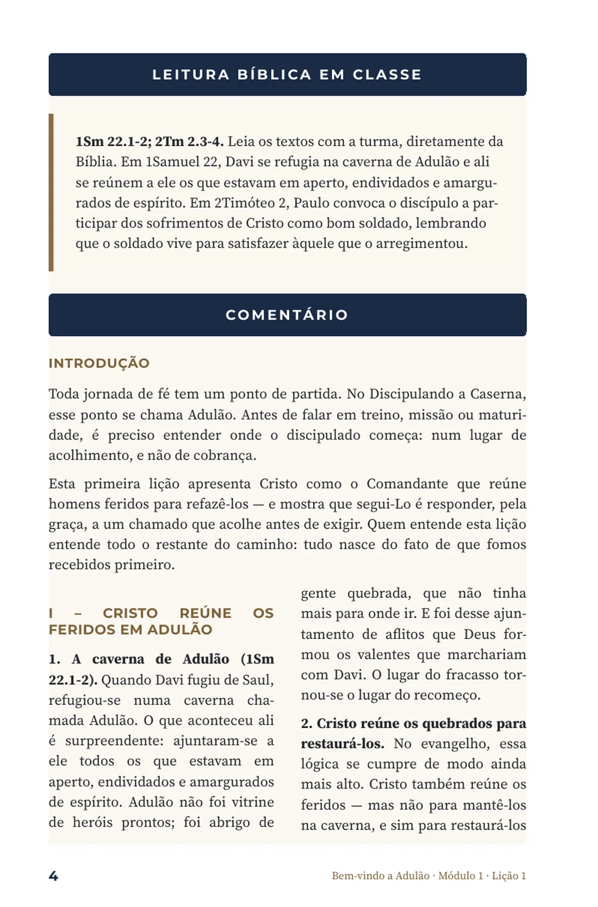
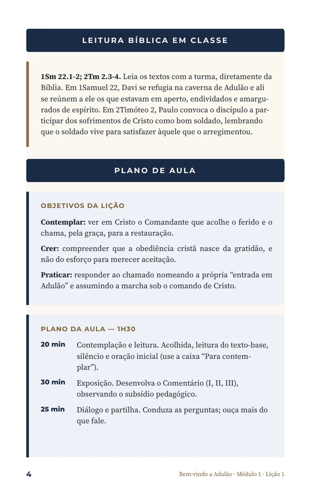

Moralismo
Nenhuma lição sugere que o esforço compra aceitação. A graça vem antes do desempenho, sempre.
Projeto Caserna de Adulão
Um discipulado cristocêntrico para a caserna e para os que estão em aperto
Pastor Glaydston,
Escrevo o senhor por meio desta apresentação. Aqui está, reunido em um só lugar, tudo o que foi construído até agora: a convicção que sustenta o projeto, o método que o organiza e o material que já está pronto. Nada disto é definitivo. O senhor lê estas páginas como quem tem a palavra final.
Versão candidata — aguardando apreciação pastoral
De onde vem o nome
“Todo homem que se achava em aperto, todo homem endividado e todo homem amargurado de espírito reuniu-se a ele; e ele se tornou capitão deles.”
1Sm 22.2
Davi não fundou uma academia de elite. Fundou um refúgio. E foi daquele ajuntamento de homens quebrados que Deus formou os valentes que marchariam com ele.
Este projeto nasce da mesma convicção. O homem que chega ao discipulado dentro de um quartel ou de uma unidade prisional raramente chega inteiro. Chega ferido, muitas vezes envergonhado, quase sempre desconfiado de autoridade. Adulão não é o lugar dos prontos — é o lugar dos que ainda não têm para onde ir.
É por isso que o material não começa cobrando. Começa acolhendo.
O que sustenta tudo
Todo o programa se apoia em um único eixo: é Cristo quem age. O discípulo não escala uma carreira espiritual — ele responde a um Comandante que já o alcançou pela graça. A obediência é fruto e resposta, nunca moeda de troca.
Nenhuma lição sugere que o esforço compra aceitação. A graça vem antes do desempenho, sempre.
A metáfora militar serve ao evangelho — nunca o contrário. Ela ilumina a lealdade; não fabrica bravata nem humilha.
O discípulo não coleciona medalhas. Ele é revestido por Cristo. Os símbolos marcam etapas, não conquistas.
O material acolhe feridas reais sem expor ninguém. Cuidado pastoral vem antes de qualquer método.
Como o caminho se organiza
São 48 encontros, distribuídos em aproximadamente um ano. Os módulos são sequenciais: não se avança de etapa carregando lacunas da anterior. Essa progressão, porém, não é promoção por mérito — é cuidado pastoral, discernido em oração pelo instrutor e pela liderança local.
Módulo 1 · Cinto da Verdade
Módulo 2 · Couraça da Justiça
Módulo 3 · Calçados do Evangelho da Paz
Módulo 4 · Escudo da Fé
O Capacete da Salvação e a Espada do Espírito não foram atribuídos a módulos, por decisão deliberada: a Espada é a Palavra de Deus, instrumento de cada lição, do chamado ao envio; o Capacete guarda a mente na esperança da salvação e está reservado à dimensão pastoral de socorro.
Como uma lição é construída
Toda lição segue a mesma arquitetura. Essa constância não é falta de imaginação — é cuidado pastoral: o discípulo sabe o que esperar, e o instrutor nunca precisa improvisar. Abaixo, a Lição 1 do Módulo 1, camada por camada.

Camada 1
O texto é lido diretamente das Escrituras, com a turma, antes de qualquer comentário. A Palavra vem primeiro.
Camada 2
Situa o discípulo na jornada: onde ele está, o que já recebeu e o que esta lição trata.
Camada 3
A exposição avança em três movimentos (I, II, III), cada um com pontos numerados, sempre voltando o olhar para Cristo.
Camada 4
Uma caixa que interrompe a exposição de propósito e devolve o olhar ao Comandante. Contemplar vem antes de aplicar.
Camada 5
Aprofundamento de um termo grego, uma imagem bíblica ou um dado histórico que ilumina o texto.
Camada 6
Sintetiza a lição, oferece uma confissão-âncora para o discípulo levar consigo e faz a ponte para a lição seguinte.
Camada 7
Cinco perguntas de aplicação. Na Edição do Instrutor, cada uma vem com orientação de condução.
Camada 8
Fecha o encontro com oração, compromisso escrito e três ordens concretas para a semana.
As posições dos marcadores são aproximadas e servem à leitura da estrutura, não à paginação exata.
O mesmo texto, dois olhares
Cada lição é produzida em duas edições. O aluno recebe o conteúdo; o instrutor recebe o conteúdo e mais o que precisa para conduzir. Nenhum voluntário é enviado à sala com uma apostila e boa vontade.

O que se espera que o discípulo contemple, creia e pratique.
A hora e meia dividida em quatro blocos, com o que fazer em cada um.
Diretriz pastoral sobre o tom da lição: o que enfatizar e o que evitar.
Para onde conduzir a partilha, sem constranger nem expor ninguém.
O que deve ter mudado quando o encontro terminar.
A Edição do Aluno da Lição 1 tem 7 páginas; a do Instrutor, 9.
Uma hora e meia, na prática
O plano existe para proteger o encontro — não para engessá-lo. Repare na proporção: o tempo de escuta é quase tão longo quanto o de exposição. Em salas onde os homens raramente são ouvidos, isso é parte do método.
Acolhida, leitura do texto-base com pausas, silêncio e oração inicial, usando a caixa “Para contemplar”.
Desenvolvimento do Comentário em três seções, observando o subsídio pastoral da edição do instrutor.
Condução das cinco perguntas. A orientação ao instrutor é direta: ouça mais do que fale.
Oração em duplas ou como tropa, compromisso da semana e entrega da Ordem do Dia.
Os tempos são referência, não cronômetro. O instrutor ajusta ao ritmo da turma e ao contexto da unidade.